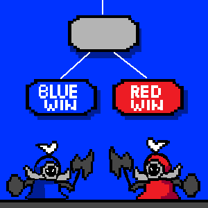
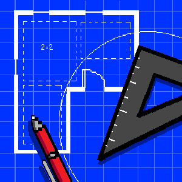

note: mobile users can tap on the images for project description. both clicking and hovering work on desktop!! (all the pixel art is by me)

End-to-end text generator built with a fine-tuned version of GPT2, hosted on Streamlit as a web app. Creates your own personalized elevator pitch!
Elevator Pitch Generator with LLM
Pytorch, GPT2, LLM Fine-Tuning, Transformers, Streamlit
Web App |
GitHub

Feedforward network that predicts the behavior of a customer based on ecommerce data with up to 90% accuracy.
Customer Behavior Prediction with FNN
Tensorflow, Neural Networks, Deep Learning
Notebook

Language model built with Pytorch trained on IT support related chatlogs. (still under construction)
Tech Support Chatbot
Pytorch, NLP, Neural Networks, Deep Learning
GitHub

Convolutional Neural Network (CNN) to classify cells as leukemia blasts or normal using microscopy images.
Leukemia Cell Classifier with CNN
Cell Imaging, CNN, Tensorflow, Deep Learning
Notebook
Logistic regression model that predicts if a patient was at risk of heart disease. Used feature engineering, ridge regularization, and likelihood tests.
Predicting Coronary Heart Disease with Regression
Logistic Regression, R
Report

Feedforward neural network that predicts if a patient is at risk for diabetes or not.
Diabetes Diagnosis Classifier with Neural Networks
Tensorflow, Neural Networks, Deep Learning
Report
Survival analysis on clinical trial for throat cancer. Analysis with Cox regresion, Cox PH, Kaplan-Meier, and log-rank tests.
Clinical Trial on Treatment for Pharyngeal Cancer
Survival Analysis, Biostatistics, SAS
Report
Analysis how different factors: font size, text length, and screen brightness affects typing speed using a 2^3 Factorial Design with Incomplete Blocking.
Factors Affecting Typing Speed
Experimental Design, ANOVA, R
Report
Web scraping bot that extracts job data such as title, salary, and location from Indeed. There was supposed to be more but... I ran out of API keys.
Web Scraping Indeed Job Postings
Python, BeautifulSoup, web scraping, data mining
Kaggle
Fetches a genome from the bvbrc database and counts the number of ORFs using sequencing techniques.
ORF (Open Reading Frame) Finder
DNA Sequencing, Linux, Bash
GitHub
Analyzed bacterial genomic data from BV-BRC with methods including BLAST, MSA, and Phylogenetic trees.
Genomic Analysis of Serratia marcescens
Protein and DNA Sequencing, BLAST, MSA, Phylogenetic Trees
Report
Heads Up (charades game) but with League of Legends champions. That's it.
League of Heads Up
Javascript, HTML, CSS
GitHub

Predicting win probability in League of Legends with a variety of machine learning methods.
League of Legends Win Probability Predictor
Python, Decision Trees, Random Forest, XGBoost, SVM
Kaggle
"Why did you waste time building from scratch instead of using a template?" For pure love of the game, I guess.
Personal Portfolio Site
HTML, CSS, Javascript, UI/UX
Github
Website hosted on AWS that archives Dungeons and Dragons campaigns run by me and my friends. Indefinitely under construction 😿
City of Mist Website
HTML, CSS, Javascript, UI/UX, AWS
Website |
GitHub

A selection of my work from when I was an architecture undergrad!
Architecture Portfolio
Adobe Suite, AutoCAD, Revit, Rhino3D, Enscape, Sketchup
Portfolio